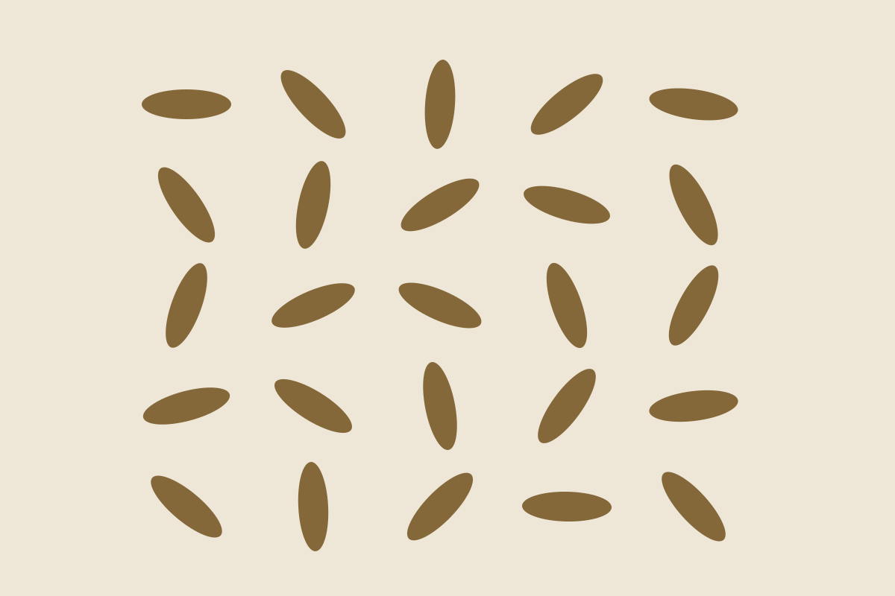

Pure botanicals
Inspired by South African herbal traditions.
SOUTH AFRICAN HERBAL TEA
Discover the naturally sweet, caffeine-free character of honeybush tea. A moment of calm, inspired by the Cape.
Explore our teasWELCOME TO HONEYBUSH HOUSE
Our fictional tea house celebrates South African botanical heritage and the joy of a comforting brew.

OUR SIGNATURE LOOK
Thoughtfully imagined blends, presented in our illustrated concept packaging.
Discover the collection →
Inspired by South African herbal traditions.

A comforting cup, any time of day.

A tribute to the landscapes that inspire us.